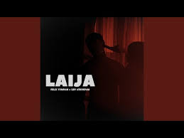

Laija

Artists: Felix Yumnam, Len Athokpam
Album: Laija
Released: 2024
Lyrics:
Yek luriba saktamse thamoisida
Muthtpagi pangal yaodre
Latcharuba nangbu thamoisina
Nungshi mitam mami samkhre
Akaobagi leirolnungda
Chankharo yadaba nangse
Thamoinungi erolnungda
Tinduna leiramba nangse
Leirambara eibu lakna naba
Laklibara thamoi otnaba
Tamlambara langtak na hanaba
Purakpara pirang khudolnaba
Liklaigi masak louribi laija
Natouni nachatni akaiba leite
Thamoi da wahang di
Hangningli eina
Nungshiroidaba nangbu
Karigi nungshiba
Amamba leichil nangsu manglanu
Churoidaba nong nangsu khaklanu
Ekang thokla thamoise laknaranu
Nonggoubi ekhou langlanu
Angaobaga pangkhak oire
Thembinaba kana leitre
Thamoi meisa khangba ware
Nungshi meiri meiwai rakle
Maithiraba thamoi puraga
Edom lapna chatke khallasu
Nokmi nokmi nangi namina
Chatkhinu haina thingli
Yek luriba saktamse thamoisida
Muthatpagi pangal yaodre
Latcharuba nangbu thamoisina
Nungshi mitam mami samkhre
Nangi oiyo tamlamdraba punshini
Ei khamde
Eigi oiyo yaroidaba ngbu ohh
Waroude
Yek luriba saktamse thamoisida
Muthatpagi pangal yaodre
Latcharuba nangbu thamoisina
Nungshi mitam mami samkhre
Akaobagi leirolnungda
Chankharo yadaba nangse
Thamoinungi erolnungda
Tinduna leiramba nangse